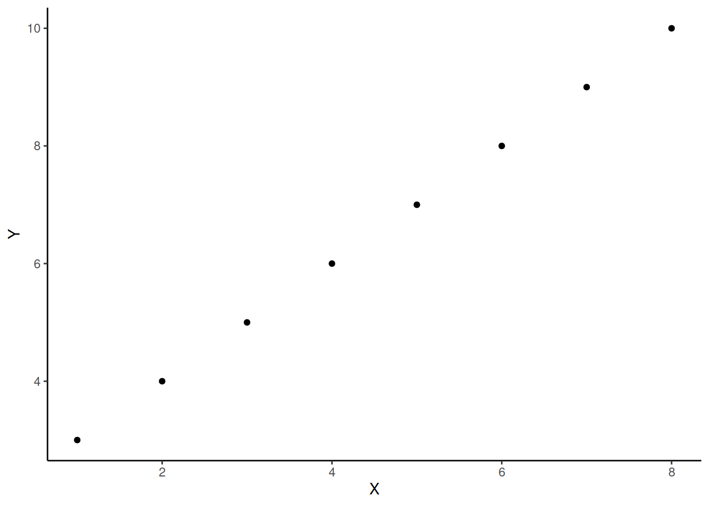
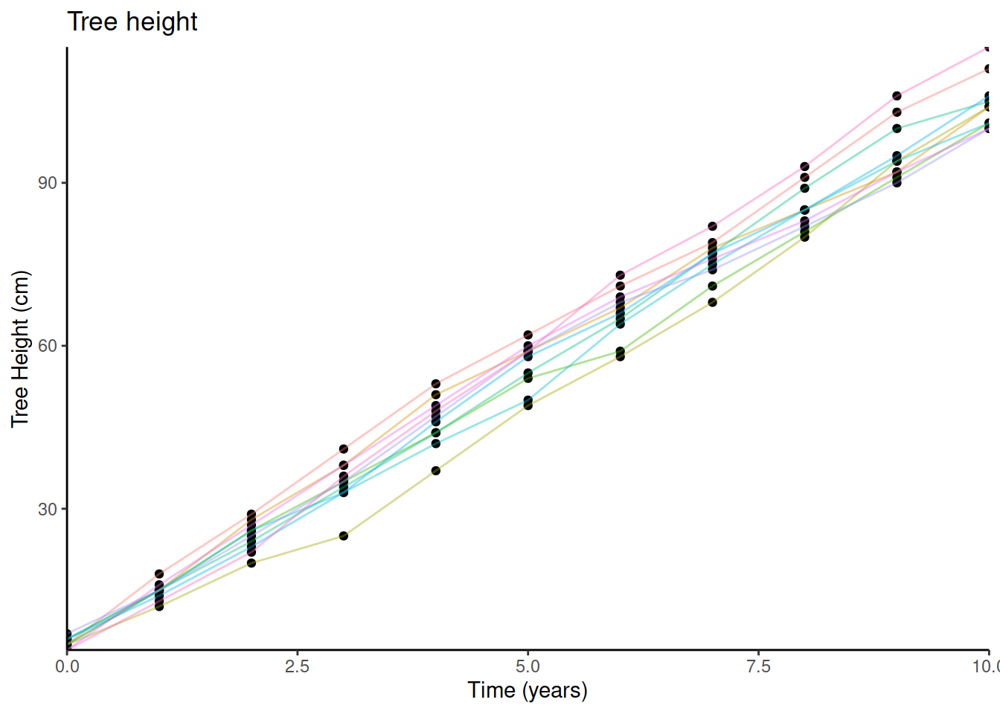
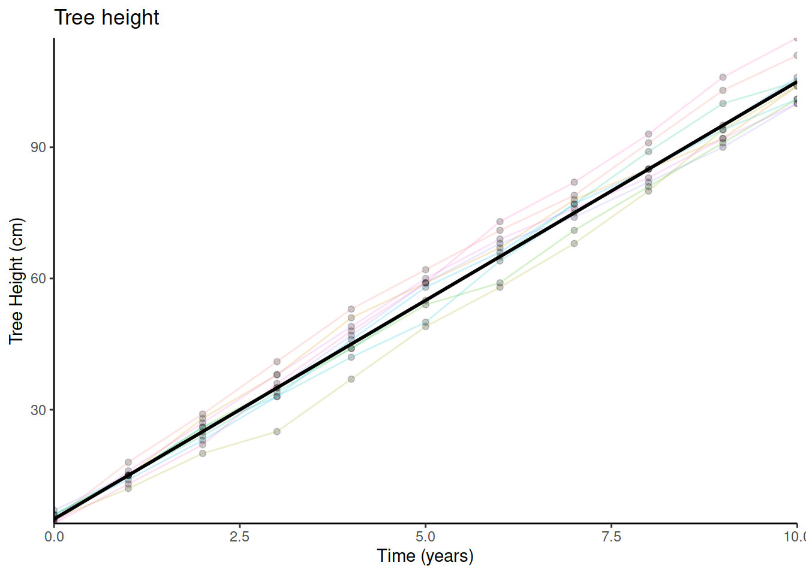
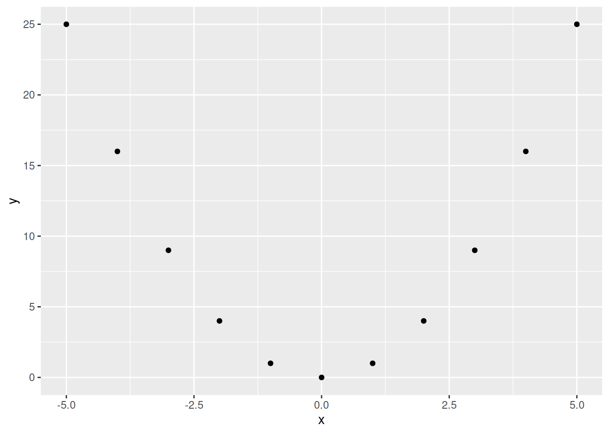
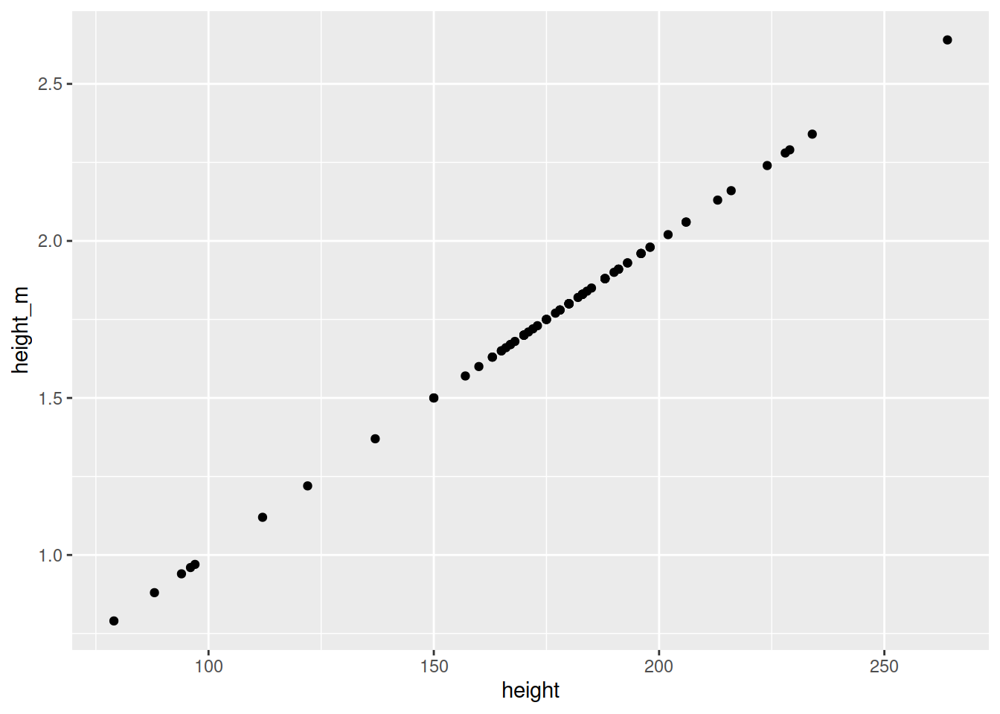
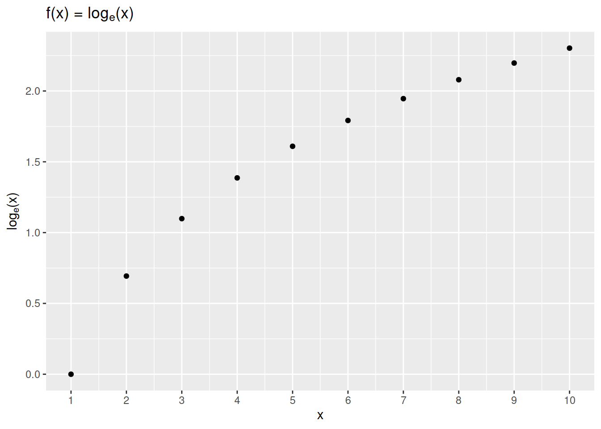
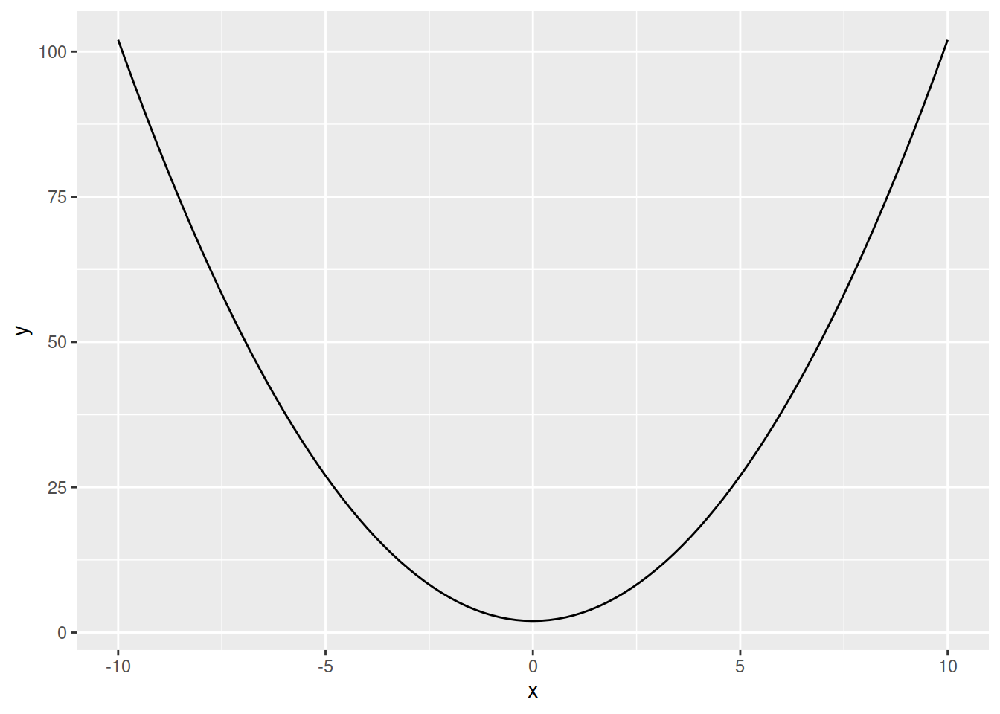
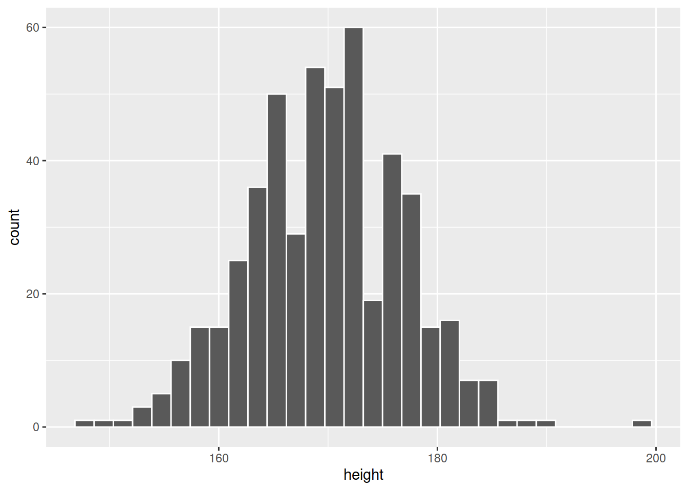

Be sure to check the solutions to last week’s exercises.
You can still ask any questions about previous weeks’ materials if things aren’t clear!
LEARNING OBJECTIVES
You have seen by now how to visualise the distribution of a variable, and how to visualise a relationship between two variables. Relationships between two variables can look very different, and can follow different patterns. These patterns can be expressed mathematically in the form of functions.
Functions
A function is a mapping between two sets of numbers (\(x\) and \(y\)) - associating every element of \(x\) with an element in \(y\).
We often denote functions using the letter \(f\), in that we state that \(y = f(x)\) (“y equals f of x”).
For example, there is a mapping between these two sets:
\[x=\begin{bmatrix} 1 \\ 2 \\ 3 \\ 4 \\ 5 \\ 6 \\ 7 \\ 8 \\ \end{bmatrix}, \qquad y=\begin{bmatrix} 3 \\ 4 \\ 5 \\ 6 \\ 7 \\ 8 \\ 9 \\ 10 \\ \end{bmatrix}\]
And we can write this mapping as:
\[f(x) = x + 2\]
And we could visualise this relationship between \(x\) and \(y\): 
In statistics, we often attempt to summarise the pattern that is present in the data using linear functions.
Imagine that we plant 10 trees, and measure their heights each year for 10 years. We could visualise this data (the relationship between time and tree height) on a scatterplot (we have added some lines to the plot to show which tree is which):

We might sensibly choose to describe this pattern as a line:

And in order to describe a line like this, we require two things:
When we planted the trees (at year 0), they were on average about 5cm tall. So this is where our line starts.
For every year, the trees grew by about 10cm on average. So we can now describe tree height as a function of time:
\[\textrm{Tree height} = 5 + (10 \times \textrm{Years})\]
We can write this in terms of \(x\) and \(y\):
Figure 1: Yerkes Dodson Law
One way to describe curves is to use polynomials (\(x^2\), \(x^3\), etc.).
For example, in the following two sets, \(y\) can be described as \(f(x)\) where \(f(x)=x^2\):
\[x=\begin{bmatrix} -5 \\ -4 \\ -3 \\ -2 \\ -1 \\ 0 \\ 1 \\ 2 \\ 3 \\ 4 \\ 5 \end{bmatrix}, \qquad y=\begin{bmatrix} 25 \\ 16 \\ 9 \\ 4 \\ 1 \\ 0 \\ 1 \\ 4 \\ 9 \\ 16 \\ 25 \end{bmatrix}\]
and when we plot each value of \(x\) against the corresponding value of \(y\): 
We have seen previously how we might change all the values in a variable, for instance if we want to turn heights from centimetres to metres:
# read in the starwars dataset and assign it the name "starwars2"
starwars2 <- read_csv("https://uoepsy.github.io/data/starwars2.csv")
# take the starwars2 dataframe %>%
# mutate it such that there is a new variable called "height_m",
# the values of which are equal to the "height" variable divided by 100.
# then, select only the "height" and "height_m" columns (this is just
# to make it easier to see without all the other variables)
starwars2 %>%
mutate(
height_m = height/100
) %>%
select(height, height_m)## # A tibble: 75 x 2
## height height_m
## <dbl> <dbl>
## 1 172 1.72
## 2 167 1.67
## 3 96 0.96
## 4 202 2.02
## 5 150 1.5
## 6 178 1.78
## 7 165 1.65
## 8 97 0.97
## 9 183 1.83
## 10 182 1.82
## # … with 65 more rowsWhat we have done here, can be described as a transformation, in that we have applied a mathematical function to the values in the height variable.
Transformation
Data transformation is when we apply a deterministic function to map each value of a variable to a transformed value.
We transform for various reasons. For instance, we can use it to change the units we are interpreting (e.g., cm to m), or to change the shape of a distribution (e.g., make it less skewed).
We could even plot the heights in cm and heights in m against one another (note what units are on each axis):

The relationship between a variable and a transformed variable need be linear, for example, log transformation:

Recall our dataset from our introduction to handling numerical data, in which we had data on 120 participants’ IQ scores (measured on the Wechsler Adult Intelligence Scale, WAIS), their ages, and their scores on 2 other tests. We know how to calculate the mean and standard deviation of the IQ scores:
# read in the data
wechsler <- read_csv("https://uoepsy.github.io/data/wechsler.csv")
# calculate the mean and sd of IQs
wechsler %>%
summarise(
mean_iq = mean(iq),
sd_iq = sd(iq)
)## # A tibble: 1 x 2
## mean_iq sd_iq
## <dbl> <dbl>
## 1 99.3 15.4Two very useful transformations we can apply to a variable are centering and standardisation.
Mean-centering
To Mean-center a variable, we simply subtract the mean from each value, \(x_i - \bar{x}\): \[ \textrm{raw IQ} = \begin{bmatrix} 71 \\ 103 \\ 74 \\ 108 \\ 118 \\ 129 \\ ... \end{bmatrix}, \qquad \textrm{mean centered IQ} = \begin{bmatrix} 71-99.3 \\ 103-99.3 \\ 74-99.3 \\ 108-99.3 \\ 118-99.3 \\ 129-99.3 \\ ... \end{bmatrix} = \begin{bmatrix} -28.3 \\ 3.7 \\ -25.3 \\ 8.7 \\ 18.7 \\ 29.7 \\ ... \end{bmatrix} \]
To mean-center in R, we can simply add a new variable using mutate() and subtract the mean IQ from the IQ variable:
# Take the "wechsler" dataframe, and mutate it,
# such that there is a variable called "iq_meancenter" for which
# the entries are equal to the "iq" variable entries minus the
# mean of the "iq" variable
wechsler %>%
mutate(
iq_meancenter = iq - mean(iq)
)## # A tibble: 120 x 6
## participant iq age test1 test2 iq_meancenter
## <chr> <dbl> <dbl> <dbl> <dbl> <dbl>
## 1 ppt_1 71 27 46 50 -28.3
## 2 ppt_2 103 38 42 29 3.67
## 3 ppt_3 74 20 50 77 -25.3
## 4 ppt_4 108 46 50 62 8.67
## 5 ppt_5 118 45 60 29 18.7
## 6 ppt_6 129 33 45 45 29.7
## 7 ppt_7 103 49 42 41 3.67
## 8 ppt_8 120 27 63 33 20.7
## 9 ppt_9 96 37 53 44 -3.33
## 10 ppt_10 80 26 53 21 -19.3
## # … with 110 more rowsStandardisation
When we standardise a variable, we call the transformed values z-scores. To transform a given value \(x_i\) into a z-score, we simply calculate the distance from \(x_i\) to the mean, \(\bar{x}\), and divide this by the standard deviation, \(s\)
\[ z_i = \frac{x_i - \bar{x}}{s} \]
So for each of the raw IQ scores, we can transform them to z-scores by subtracting the mean and then dividing by the standard deviation. The resulting values tell us how low/high each participant’s IQ score is compared to observed distribution of scores:
\[
\textrm{raw IQ} = \begin{bmatrix} 71 \\ 103 \\ 74 \\ 108 \\ 118 \\ 129 \\ ... \end{bmatrix}, \qquad
\textrm{standardised IQ} = \begin{bmatrix} \frac{71-99.3}{15.43} \\ \frac{103-99.3}{15.43} \\ \frac{74-99.3}{15.43} \\ \frac{108-99.3}{15.43} \\ \frac{118-99.3}{15.43} \\ \frac{129-99.3}{15.43} \\ ... \end{bmatrix} = \begin{bmatrix} -1.84 \\ 0.238 \\ -1.64 \\ 0.562 \\ 1.21 \\ 1.92 \\ ... \end{bmatrix}
\]
We can achieve this in R either by manually performing the calculation:
# Take the "wechsler" dataframe, and mutate it,
# such that there is a variable called "iq_z" for which
# the entries are equal to the "iq" variable entries minus the mean of the "iq"
# variable, divided by the standard deviation of the "iq" variable.
wechsler %>%
mutate(
iq_z = (iq - mean(iq)) / sd(iq)
)## # A tibble: 120 x 6
## participant iq age test1 test2 iq_z
## <chr> <dbl> <dbl> <dbl> <dbl> <dbl>
## 1 ppt_1 71 27 46 50 -1.84
## 2 ppt_2 103 38 42 29 0.238
## 3 ppt_3 74 20 50 77 -1.64
## 4 ppt_4 108 46 50 62 0.562
## 5 ppt_5 118 45 60 29 1.21
## 6 ppt_6 129 33 45 45 1.92
## 7 ppt_7 103 49 42 41 0.238
## 8 ppt_8 120 27 63 33 1.34
## 9 ppt_9 96 37 53 44 -0.216
## 10 ppt_10 80 26 53 21 -1.25
## # … with 110 more rowsOr we can use the scale() function:
# Take the "wechsler" dataframe, and mutate it,
# such that there is a variable called "iq_std" for which
# the entries are equal to the scaled values of the "iq" variable.
wechsler %>%
mutate(
iq_std = scale(iq)
)## # A tibble: 120 x 6
## participant iq age test1 test2 iq_std[,1]
## <chr> <dbl> <dbl> <dbl> <dbl> <dbl>
## 1 ppt_1 71 27 46 50 -1.84
## 2 ppt_2 103 38 42 29 0.238
## 3 ppt_3 74 20 50 77 -1.64
## 4 ppt_4 108 46 50 62 0.562
## 5 ppt_5 118 45 60 29 1.21
## 6 ppt_6 129 33 45 45 1.92
## 7 ppt_7 103 49 42 41 0.238
## 8 ppt_8 120 27 63 33 1.34
## 9 ppt_9 96 37 53 44 -0.216
## 10 ppt_10 80 26 53 21 -1.25
## # … with 110 more rowsWe can also use the scale() function to mean-center a variable, by setting scale(variable, center = TRUE, scale = FALSE):
# create two new variables in the "wechsler" dataframe, one which is
# mean centered iq, and one which is standardised iq:
wechsler %>%
mutate(
iq_mc = scale(iq, center = TRUE, scale = FALSE),
iq_std = scale(iq, center = TRUE, scale = TRUE) # these are the default settings
)## # A tibble: 120 x 7
## participant iq age test1 test2 iq_mc[,1] iq_std[,1]
## <chr> <dbl> <dbl> <dbl> <dbl> <dbl> <dbl>
## 1 ppt_1 71 27 46 50 -28.3 -1.84
## 2 ppt_2 103 38 42 29 3.67 0.238
## 3 ppt_3 74 20 50 77 -25.3 -1.64
## 4 ppt_4 108 46 50 62 8.67 0.562
## 5 ppt_5 118 45 60 29 18.7 1.21
## 6 ppt_6 129 33 45 45 29.7 1.92
## 7 ppt_7 103 49 42 41 3.67 0.238
## 8 ppt_8 120 27 63 33 20.7 1.34
## 9 ppt_9 96 37 53 44 -3.33 -0.216
## 10 ppt_10 80 26 53 21 -19.3 -1.25
## # … with 110 more rows
scale() To mean center or standardise a variable (depending upon whether center=TRUE/FALSE and scale=TRUE/FALSE).The exercises below are a little different. As opposed to starting with some data, we’re going to work a bit more abstractly, and create some data ourselves which maps one variable to another via some function which we define.
As always, you should begin by opening a new Rmarkdown file, and giving it an appropriate title for this set of exercises.
We’re going to need the tidyverse packages, so load that too.
We know how to create a vector in R. For instance, we can create an object with called “x” which has the entries from 1 to 100:
x <- 1:100For \(x = [1,2,...,99,100]\), give the values resulting from \(f(x) = 3x+3\).
For \(x = [1,2,...,19,20]\), give the values resulting from \(f(x) = x^2+2\).
Plot these against \(x\).
Tip: You don’t have to use ggplot. For a really quick plot in R, you can use plot(). If you want to plot two vectors against one another, you can simply use plot(x = <vector1name>, y = <vector2name>)
We can create an object in R called a tibble (basically a dataframe in tidyverse language). We can, for instance, create an object which has a variable called “x” and a variable called “y”, which we define:
# create a new tibble/dataframe, and assign it the name "newdata".
# in it, there is a variable called "x" which takes the numeric
# values from -10 to 10, and the variable called "y" which takes a set of
# numeric values: 102,83,....
newdata <-
tibble(
x = -10:10,
y = c(102,83,66,51,38,27,18,11,6,3,2,3,6,11,18,27,38,51,66,83,102)
)
newdata## # A tibble: 21 x 2
## x y
## <int> <dbl>
## 1 -10 102
## 2 -9 83
## 3 -8 66
## 4 -7 51
## 5 -6 38
## 6 -5 27
## 7 -4 18
## 8 -3 11
## 9 -2 6
## 10 -1 3
## # … with 11 more rowsPlot the variables against one another, and write out the function which defines their relationship.
Confirm that you are correct by creating a new column called “fx”, which is calculated from the values in x.
Tip: For variables in a dataframe against one another, you could combine plot() with the $, and use plot(x = data$variable1, y = data$variable2).
We can also create a plot of a function using stat_function() in a ggplot.
The syntax is a bit odd (and difficult to remember!), but we can give our ggplot the variable from our dataset on the x-axis, and then give the stat_function() function a mathematical function to the fun = argument:
ggplot(data = newdata, aes(x = x)) +
stat_function(fun = function(.x) .x^2+2)
For \(x in [-10,-9,...,9,10]\), use stat_function() to create three plots, one for each of the functions \(f(x)=x^2\), \(f(x)=x^3\) and \(f(x)=x^4\).
As an extra challenge, colour the lines blue, red and green respectively, and arrange the plots side by side.
You can do this with the package patchwork, which is specifically for arranging ggplots.
You will need to install the package first, by calling install.packages("patchwork") in your console (remember, we install only once so we don’t want to keep this line in our script where we are likely to run code many times).
You will then need to load the package using library(package) in your editor.
You can then arrange ggplots using |, +, and /.
Figure 2: Artwork by @allison_horst
I take out a loan of £1000 from a bank with an interest rate of 15% per annum.
Over the course of 20 years, I never pay any of it back.
If you were to create a plot with “years” on the x-axis and “amount owed” on the y-axis. What would the line look like?
As an extra challenge, try to write out the function f(x) for \(x\) in years \([1,2,...,19,20]\) which computes the amount of the loan.
Read in the data at https://uoepsy.github.io/data/rtdata.csv. It contains measurements (in milliseconds) from a simple reaction time task, conducted on 500 participants. Create a histogram of the 500 participants’ reaction times.
Notice that the distribution of reaction times is skewed. Why do you think this might be?
Often, a lot of statistical analyses rely on assuming certain characteristics of a distribution - for example, assuming that it is bell-shaped and symmetric (which these reaction times are not).
We can apply certain transformations to an observed distribution in order to have a distribution of transformed values which follows the shape we want.
One of the most common transformations is the log transformation: \(f(x) = log_e(x)\)
Add a new column to the data which contains log transformed reaction times, and create a histogram of the distribution.
Recall that log transformation is not a linear transformation. Let’s explore what that means.
Consider the following people and their reaction times:
Are your answers what you expected?
Also in the dataset are the participants’ heights:
ggplot(data = rtdata, aes(x = height)) +
geom_histogram(col="white")
Standardise the participants’ heights (re-express each value as the distance from the mean height in units of standard deviations). Produce a histogram of standardised heights. How is it different from the histogram above?
How many standard deviations above the mean height is participant number 45? How tall are they in cm?